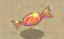

Man kann im Spiel aber trotzdem heilen. Dazu gibt es 2 Bonus- Punkte: bei der Berührung von der Kirsche und dem Bonbon.
Sie Verwandeln sich in ein Extra-Leben und geben so dem Spieler noch eine Chance.
Vor dem Aufessen von den Bonussen schweben sie und drehen sich, sodass man sie besser von der Umgebung unterscheidet.
